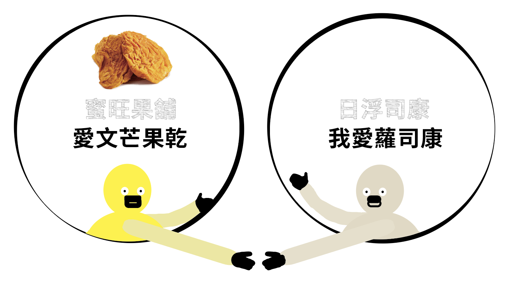

前往➜
1994年以「蜜旺果舖」建立品牌，經歷果乾庫存衍生的資金壓力，以及與夫妻倆展開「跑場」人生；至2005年起各媒體陸續報導蜜旺果舖芒果乾，終於嚐到創業成功的滋味，除來自全台各地的電話下單應接不暇外，各大大小小批發商也主動找上門要求代工，營運步入收割期。以及現今，第二代的回鄉接班傳承，以企業化的方式繼續擦亮蜜旺果舖招牌。
熱愛土地的賴永坤大哥,因為看到家鄉農民芒果豐收,卻因為滯銷,不得已整箱倒掉而感到惋惜。台大商學院畢業的他,因此毅然決然放棄高薪的工作機會,返鄉繼承家業重新學習農法,在玉井芒果園中開創起他的㇐番事業。
賴大哥與在地果農共同合作,透過持續推廣「提早套袋」、「減少用藥」的關懷土地理念,推動果農與土地共好的觀念。在他多年的堅持下,終於種植出品質穩定,吃起來滿足又安心的香甜芒果,㇐直到今天,金黃夢想終於豐碩的點亮這㇐塊土地,也造就了玉井另㇐番盛景。
✧地點：台南市玉井區望明里53-6號
✧電話：06-574 6787
✧開放時間：星期一至日／0900-1800
✧小提醒：拜訪前，FB確定營業時間
看到父母與家鄉農民芒果豐收，卻因為滯銷，不得已整箱倒掉而感到惋惜；因此，結婚之後就攜家帶眷搬回玉井老家定居，繼承家業重新學習農法，在玉井芒果園中開始創業之路。
前往➜